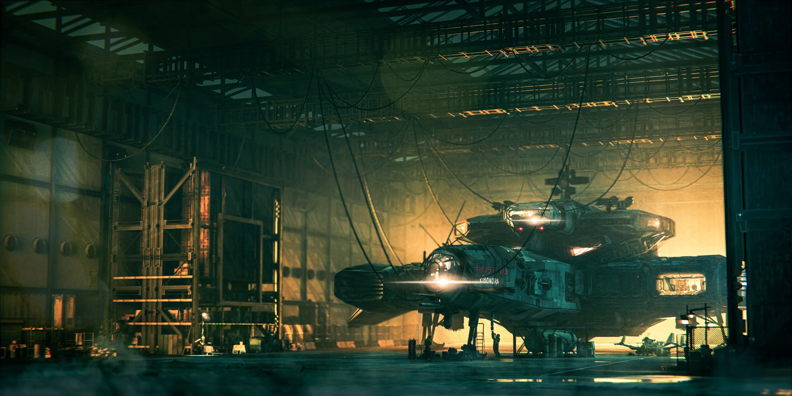
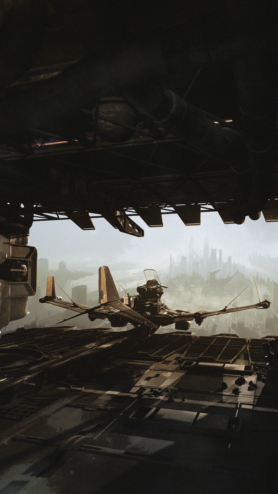
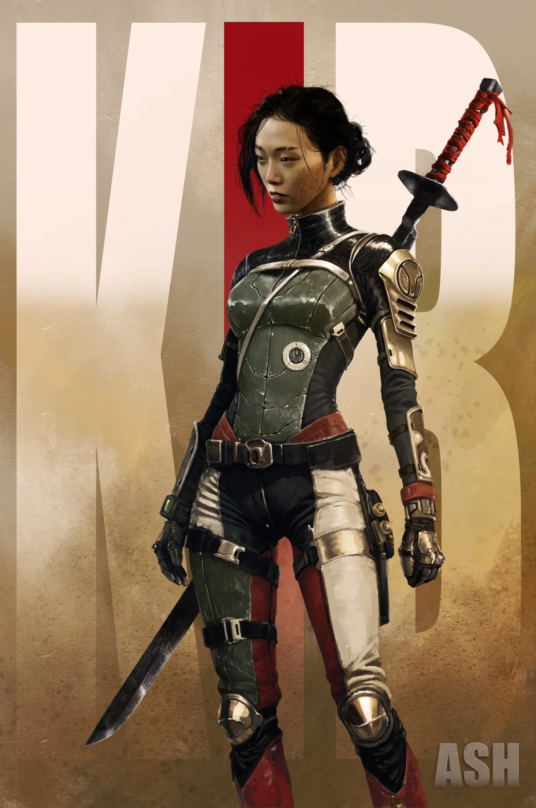
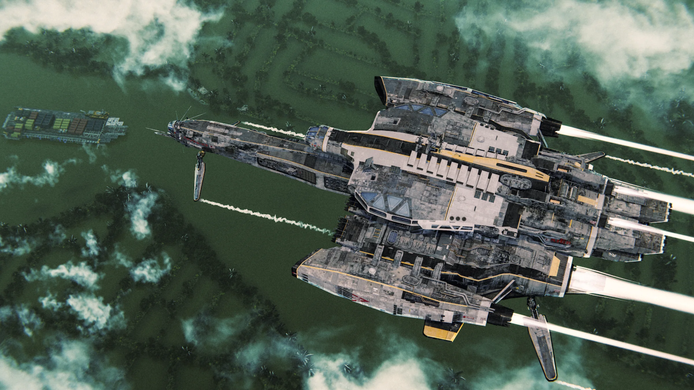
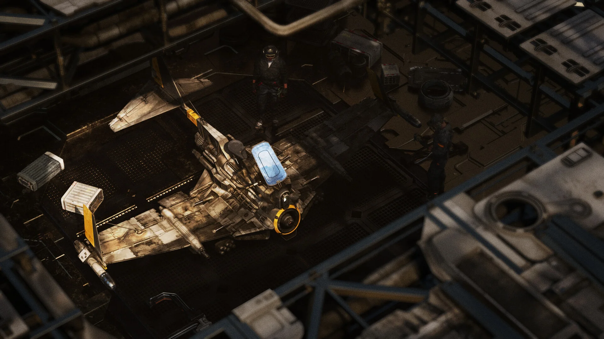

Global Premise
Timeline, geography, transformed Earth, human condition and the consequences of the Day of Silence.
Case study · Original IP Creation
An original science-fiction property created from the ground up: world premise, canon, visual systems, creatures, technology, characters, environments, narrative rules and production logic—designed to work across game, series, film and publishing.
The objective
THE KIB was conceived as an original property rather than a single game pitch. The goal is to create a coherent world strong enough to support different experiences while preserving the same identity, rules and emotional tone.
The work therefore goes beyond concept art. It defines what the world is, how it behaves, what can and cannot happen inside it, how its technology and creatures function, and how those rules affect gameplay, narrative and production.
Creative system
The IP is developed as a layered canon system. Each layer answers a different production question so visual development remains connected to story, gameplay and implementation.
Timeline, geography, transformed Earth, human condition and the consequences of the Day of Silence.
Shapers, Carriers, Swarms and supporting biomechanical systems defined through anatomy, function and hierarchy.
A family-like crew whose history, skills, conflicts and visual identities grow directly from the world.
Ship, drones, Overbikes, weapons and survival systems sharing one coherent human technology language.
World rules translated into reconnaissance, weak points, traversal, coordinated assault, extraction and progression.
Locked rules, open questions, revisions and contradiction tracking keep the IP coherent as it grows.
Methodology
The core method is to avoid designing isolated “cool things.” A creature, vehicle, structure or environment is approved when its appearance is supported by function, history, gameplay or narrative.
Visual development
Human technology, alien biomechanical forms, transformed environments and post-collapse survival culture must remain visually distinct while belonging to the same universe.
Artwork is presented without text overlays. Images keep their natural framing unless a specific composition requires an editorial crop; captions remain outside the artwork.






Canon as a tool
The canon bible is treated as a production tool rather than a lore archive. It separates locked rules from unresolved questions, records revisions and prevents new ideas from silently breaking existing logic.
What this proves
Wrath of the Druids demonstrates my ability to direct an established AAA franchise inside a large production. THE KIB demonstrates the complementary capability: starting with nothing and creating the rules, identity, mythology and visual system that a future production team would inherit.